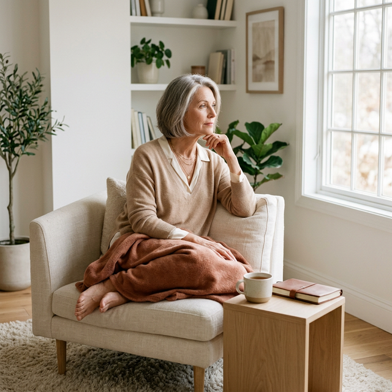
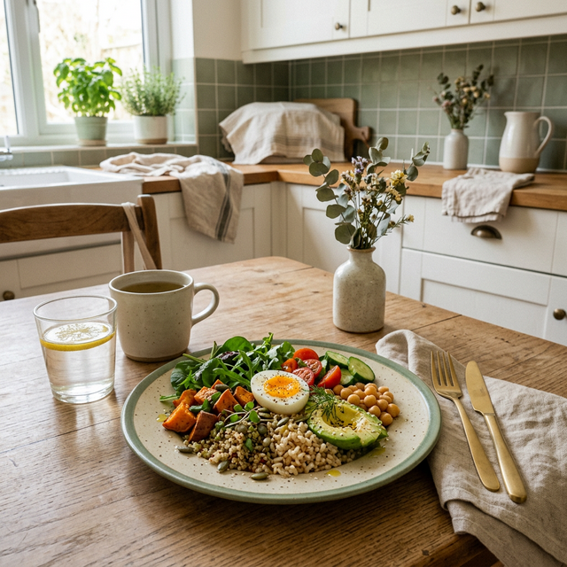

Acompañamiento, información y herramientas para comprender tus cambios emocionales, recuperar equilibrio interior y construir una relación más consciente con la alimentación.

Muchas mujeres, tras cumplir los 45 años, comienzan a experimentar cambios físicos y emocionales profundos. Es normal sentir fluctuaciones de humor, ansiedad, fatiga y, en muchos casos, confusión frente a los cambios del cuerpo y nuestra relación con la comida.
Este espacio ha sido creado especialmente para ti. Aquí te ayudaremos a entender esos cambios y te enseñaremos cómo, a través del bienestar emocional y la alimentación consciente, puedes recuperar tu equilibrio y tu vitalidad. No se trata de controlar, sino de comprender y acompañar amorosamente a tu cuerpo en esta nueva etapa.
Información clara y empática para entender las transformaciones emocionales y físicas que ocurren después de los 45 años.
Prácticas y recursos para gestionar el estrés, la ansiedad y nutrir tu bienestar mental y emocional cada día.
Aprender a reconectarte con la comida de forma sana, intuitiva y tranquila, dejando atrás la mentalidad restrictiva de las dietas.
Un entorno seguro donde compartir experiencias, sentirte comprendida y avanzar junto a otras mujeres en el mismo camino.

Muchas mujeres encuentran dificultades con la comida en esta etapa porque las emociones, el estrés y los cambios hormonales influyen profundamente en nuestros hábitos alimenticios.
Nuestro enfoque no se trata de dietas, sino de construir una relación equilibrada, amorosa y duradera con lo que comes.
Es muy común sentirse confundida, desorientada o incluso sola durante esta etapa vital. Las expectativas externas, sumadas a los cambios que vivimos en lo más profundo, a veces resultan abrumadoras.
Mujer Plena 45+ existe para brindarte orientación, información veraz, apoyo emocional y herramientas prácticas, ayudándote a integrar bienestar y nutrición consciente en tu día a día. Queremos que te sientas segura, acompañada y poderosa en la etapa más sabia de tu vida.
Descarga nuestra guía de inicio diseñada exclusivamente para ti. Este ebook integral es el comienzo perfecto para tu propio bienestar y equilibrio en esta etapa.
Conecta con otras mujeres increíbles que están experimentando cambios vitales similares. Este es un lugar de absoluto respeto, apoyo mutuo, experiencias compartidas y comprensión profunda.
Únete a la comunidadSi tienes alguna pregunta, inquietud o simplemente deseas hablar con nosotras, no dudes en escribirnos.